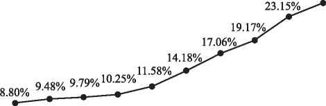

yy-2023-48
Write an essay based on the chart below. In your essay, you should
1) describe and interpret the chart, and
2) give your comments.
Write your answer in about 150 words on the ANSWER SHEET. (15 points)

The line chart above illustrates the variation in the health literacy rate of Chinese residents from 2012 to 2021. As it shows, these years witnessed an uninterrupted rise in residents' health literacy rate from 8.80% to 25.40%. And notably, the year 2016 marked a watershed when the growth accelerated considerably.
The reasons behind the progress in Chinese people's health literacy are multifaceted. To begin with, as general living standards and educational levels improve, residents become more aware of their health and start to seek various ways to stay healthy. Secondly, the digitalization of many health services such as online consultation and AI diagnosis enabled residents to gain easy and fast access to professional health advice. Moreover, government campaigns to promote public hygiene and healthy lifestyles have also played a significant role in raising residents' health literacy.
The general public's improved health literacy is beneficial to the whole society in many ways. First and foremost, a society consisting of people who pay high regard to health is more likely to have a healthy workforce. In addition, this society would be well prepared in times of a health crisis such as a pandemic.
本题讲解：折线图作文的「两个锚点—三条归因—两层意义」三段法（2023 大作文）
答案（参考范文口径）：The line chart above illustrates the variation in the health literacy rate of Chinese residents from 2012 to 2021. As it shows, these years witnessed an uninterrupted rise in residents' health literacy rate from 8.80% to 25.40%. And notably, the year 2016 marked a watershed when the growth accelerated considerably. The reasons behind the progress in Chinese people's health literacy are multifaceted. To begin with, as general living standards and educational levels improve, residents become more aware of their health and start to seek various ways to stay healthy. Secondly, the digitalization of many health services such as online consultation and AI diagnosis enabled residents to gain easy and fast access to professional health advice. Moreover, government campaigns to promote public hygiene and healthy lifestyles have also played a significant role in raising residents' health literacy. The general public's improved health literacy is beneficial to the whole society in many ways. First and foremost, a society consisting of people who pay high regard to health is more likely to have a healthy workforce. In addition, this society would be well prepared in times of a health crisis such as a pandemic.
第 0 步：先立机制——图表作文按「描述 + 解读 + 评论」三线给分
指令两个动词定内容：1) describe and interpret the chart（描述并阐释图表）+ 2) give your comments（给出评论）。折线图的描述要抓两类信息：总量趋势（整体升还是降、从多少到多少）与关键拐点（哪一年增速变了）。本题数据：2012 年 8.80% → 2016 年 11.58% → 2021 年 25.40%——十年间升到近三倍，且 2016 年前慢、2016 年后快。这两个锚点（趋势 + 拐点）就是第一段的全部内容，也是第二段「为什么涨」与第三段「涨了有什么用」的引子：整个作文 = 用一个趋势带出一次归因与一次评论。
第 1 步：读图——数据锚点怎么变成句子
- 锚点一（趋势）：8.80% → 25.40% 连续上升不间断 → these years witnessed an uninterrupted rise in residents' health literacy rate from 8.80% to 25.40%。「时间段 + witnessed + a rise in...」是外刊句型，替代普通句 the rate increased；uninterrupted（不间断的）比 continuous 更强调「一路没回头」。
- 锚点二（拐点）：2016 年前后增速明显加快 → the year 2016 marked a watershed when the growth accelerated considerably。marked a watershed（标志分水岭）+ when 定语从句，一句话同时交代「哪一年」与「怎么变」。
- 数据必须与图表一致：8.80%、25.40%、2016 三个数字原样摘录，不能取整或模糊化——图表作文的描述段靠精确数字立信。
第 2 步：谋篇——三段各司其职
- 段 1 描述图表（三句封顶）：主题句（折线图显示了什么）+ 趋势句 + 拐点句。describe and interpret 的 interpret 就落在拐点句上——只报数字是 describe，点出「2016 是分水岭」才是 interpret。
- 段 2 归因：multifaceted 一词总起，三条原因按 To begin with / Secondly / Moreover 并列，覆盖「个人—技术—政府」三个主体。
- 段 3 评论意义：两条影响按 First and foremost / In addition 并列，从社会日常推到危机情境。
第 3 步：归因怎么归——预判「为什么是这三条」
原因不必穷尽，但每条必须是完整的因果链「因（主体动作）→ 果（素养提升）」，三个主体各占一条，覆盖面与层次感同时拿到：
- 个人侧：as general living standards and educational levels improve（生活与教育水平提高）→ residents become more aware of their health and start to seek various ways to stay healthy（更关注健康并主动寻找保持健康的方法）。
- 技术侧：the digitalization of many health services such as online consultation and AI diagnosis（线上问诊、AI 诊断等健康服务的数字化）→ gain easy and fast access to professional health advice（方便快捷地获得专业健康建议）。
- 政府侧：government campaigns to promote public hygiene and healthy lifestyles（推广公共卫生与健康生活方式的宣传活动）→ played a significant role in raising residents' health literacy（在提升素养中起重要作用）。
只写「政府很重视」而不接到「素养提升」上的句子不算归因——衔接词只是排队，因果链才是给分点。
第 4 步：评论怎么评——意义落到社会两层
- 意义一（日常）：a society consisting of people who pay high regard to health is more likely to have a healthy workforce——两层后置定语（现在分词 consisting of + 定语从句 who pay...）压缩在名词 society 上，一句装下「健康的人组成的社会更可能有健康的劳动群体」。
- 意义二（危机）：this society would be well prepared in times of a health crisis such as a pandemic——从日常推到疫情这类健康危机的应对，评论有了纵深，comments 才算做完。
第 5 步：语言升格——图表作文的高分信号词
- illustrate（以图表说明）替代 show；variation（变化）替代 change。
- 「时间段 + witnessed + an uninterrupted rise in sth from A to B」替代 sth increased。
- marked a watershed + when 从句替代 2016 is an important year；accelerate 替代 speed up / increase faster。
- multifaceted（多方面的）总起原因段；gain easy and fast access to（方便快捷地获得）；public hygiene（公共卫生）；pay high regard to（高度重视）；consisting of 分词后置定语压缩定语从句。
易错点：每个失分点对应哪种误解
- 只描述不解读：第一段只报数字、没有拐点句——describe and interpret 的 interpret 落空；2016 分水岭句就是「解读」的落点。
- 数字记错或取整：8.80% / 25.40% / 2016 必须与图表一致；图表作文数字错误是硬伤，趋势词（上升、加速）也要与折线走向对应。
- 原因堆砌无链条：To begin with / Secondly / Moreover 只是排队词，每条必须有「因 → 果」；缺「果」的句子不给归因分。
- 评论与现象脱节：第三段空谈「健康很重要」；意义必须接在「素养提高」这个现象上（健康劳动群体 / 危机应对），才是本题的 comments。
- 段落失衡：描述段写到四句以上会挤掉归因与评论——三段制下第一段三句封顶。
- 图表类型用错：折线图是 line chart；写成 bar chart / pie chart 属于看图不清。
记忆锚点：折线图作文 = 两个锚点 → 三条归因 → 两层意义；趋势句用「时间段 + witnessed + an uninterrupted rise in... from... to...」，拐点句用「年份 + marked a watershed + when the growth accelerated」；归因按「个人—技术—政府」铺开（more aware of health / gain easy and fast access to / played a significant role）；意义落在 healthy workforce 与 health crisis 的准备上。